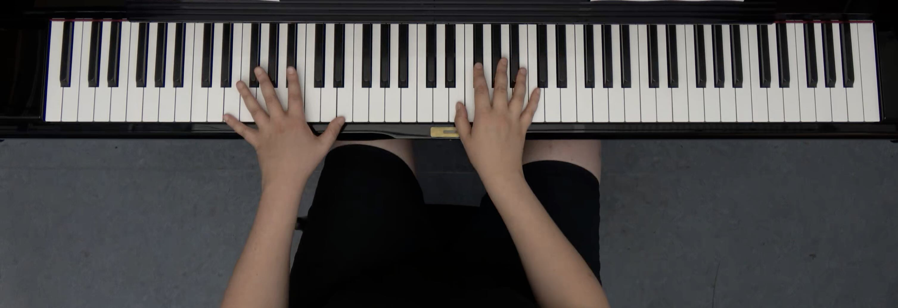

Play the piano for research 🎹Schedule a piano recording
Help us collect data by playing a self-playing piano!  Open to all skill levels and ages — just book a time, drop by, and play! 🎹 The MuMoL group is recording piano playing videos for a research project on transcribing piano music from visual information only. If you would like to record for more than 30 minutes, you are very welcome to book multiple time slots. 😊 If you would like to get involved in this research project (e.g. for Guided Research or a thesis), please get in touch with Almut Sophia. |